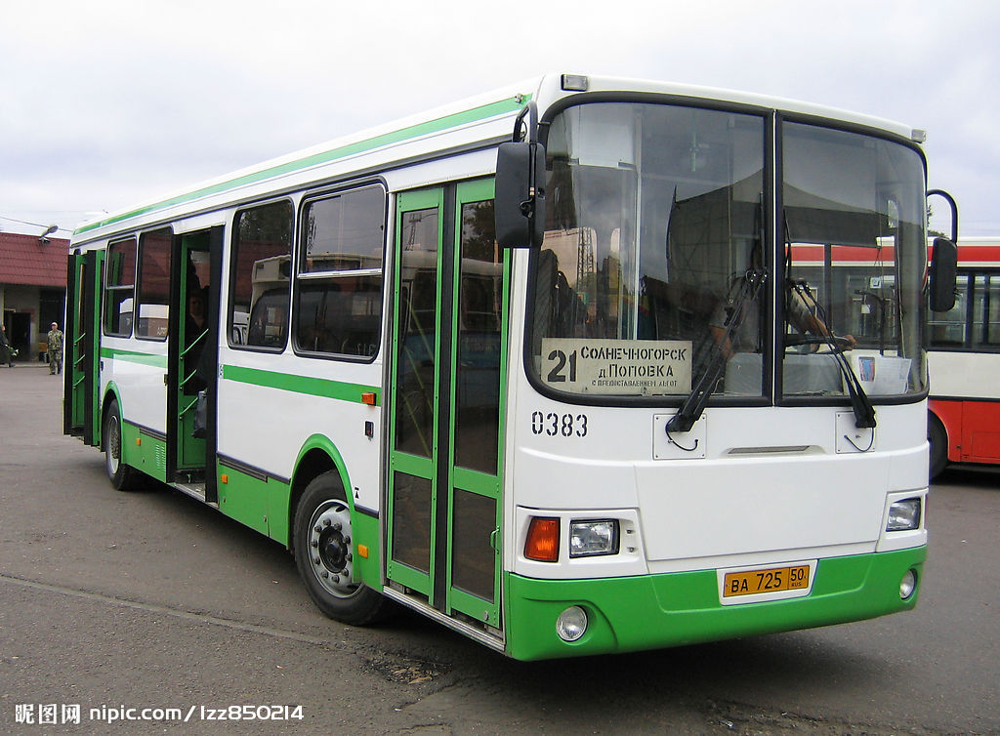

大巴
客运公司客运站例检车间投入使用
来源：未知

为扎实做好进站参营车辆的安全例检工作，确保参营车辆安全有序运行。公司按照《汽车客运站营运客车安全例行检查工作规范》在客运站新建检验地沟一个，配备了相应的检验设施设备和专门例检人员3名。同时规范了车辆安全例检工作流程[客车驶入安全例检场所→驾驶人介绍客车状况→例检人员检查车况→车况合格后开具安检单（不合格责令修理，不予开具安检合格单）→报班需带四证一卡一单（驾驶证、行驶证、营运证、从业资格证，线路附卡，安检单）→售票→出站门检（按六不出站要求进行检查）]。